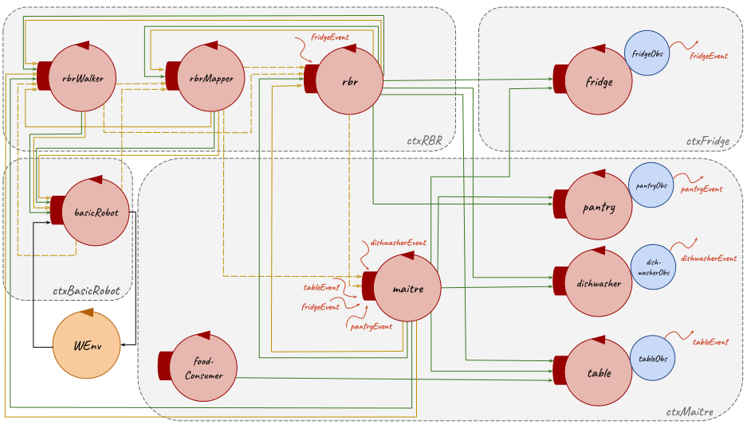

Introduction
The starting point for this SPRINT is the resulting model from the
previous Sprint 2:
| Machine Understandable Architecture Model |
A Possible Graphic Representation |
Sprint 2 model.qak
|


|
Goal
Problem Analysis
The problems related to this sprint goal, that are already
partially addressed in the
initial problem analysis, are detailed below.
Test Plans
With reference to the
initial problem analysis test plans, below it's reported a functional tests planning related to the goal of this sprint:
- Tests of all the communications between entities;
- Tests of the mutual exclusion of tasks and of their order of execution;
- Tests of the stop and reactivate commands that can be used by Maître de salle only when there is a running task.
Project
Testing
Below there are exposed some tests made for this sprint project:
Model of System's Logical Architecture
| Machine Understandable Architecture Model |
A Possible Graphic Representation |
Sprint 3 model.qak
|

|
Deployment
SCRUM Context
SPRINT Sequence
After this Sprint and according to the
Product Backlog, listed after the problem analysis, a possibile set of next Sprint could be:
- SPRINT 4
- Deploy on Raspberry
- Prepare the room task: execution by the real robot
- Add Food task: execution by the real robot
- Clear the room task: execution by the real robot
- Tests
Maintenance
By Romeo Stefano (stefano.romeo@studio.unibo.it) and Russo Maria (maria.russo10@studio.unibo.it)